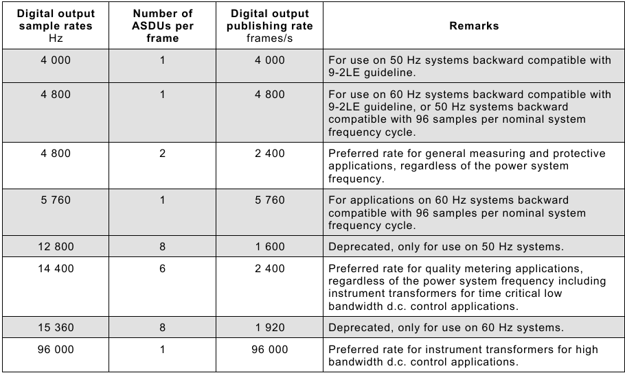
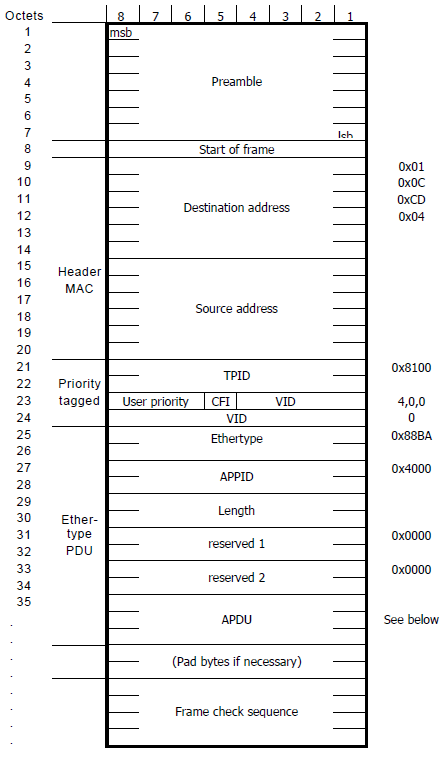
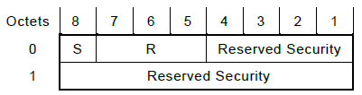
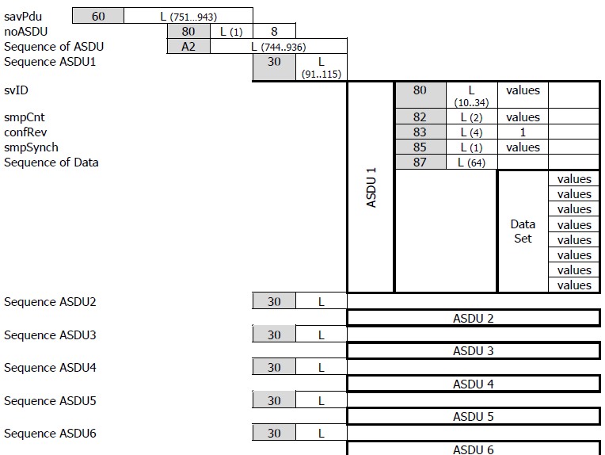
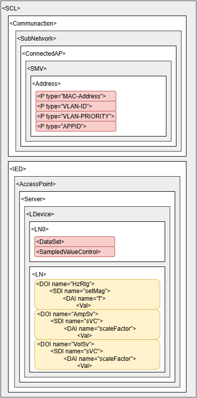

IEC 61869 Sampled Values protocol
Description of the IEC 61869 Sampled Values (SV) protocol implementation in the Typhoon HIL toolchain.
IEC 61869 Sampled Values (SV) protocol
The IEC 61869 (IEC 61869 – Communication Networks and Systems in Substations) standard defines the Sampled Values (SV) protocol as a publisher/subscriber type communication. This protocol is used for information exchange between Merging Units and IEDs (IED – Intelligent Electronic Device) in a Substation over the Ethernet.
The international standard "IEC 61869-9 Instrument transformers - Part 9: Digital interface for instrument transformers" is used as a reference in implementing the IEC 61869 SV protocol.
- 4800 samples per second
- Typically used for general measuring and protective applications
- SV Publishing rate: 2400 frames per second
- 14400 samples per second
- Typically used for quality metering applications, including instrument transformers for time-critical low bandwidth DC control applications
- SV Publishing rate: 2400 frames per second
- 96000 samples per second
- Typically used for instrument transformers for high bandwidth DC control applications
- SV Publishing rate: 96000 frames per second
Preferred variants are shown in Figure 1. Supported variants by Typhoon HIL toolchain are F4000S1, F4800S1, F4800S2, F5760S1, F12800S8, F14400S6, and F15360S8.

All messages are published under a topic. The subscriber receives all messages from the system, but filters and parses only the messages sent with the subscribed topic.
Since the SV protocol is publisher/subscriber-based, communication is possible only inside the local network (LAN).
The protocol defines the SV message as shown in Figure 2. The field definition is presented in Table 1. SV message content remains unchanged compared to IEC 61850-9-2LE SV communication protocol.

| Field name | Value | Description | ||
|---|---|---|---|---|
|
Destination address 01:0c:cd:04:xx:xx |
00:00 - 01:ff | Destination MAC address | ||
| Source address | Defined by the sending device | Source MAC address | ||
| Priority tagged | TPID | 0x8100 | Defines the 802.1Q protocol | |
| TCI | User priority | 1 - 7 | SV message priority: 4-7 is high priority; 1-3 is low priority | |
| CFI | 0 | Canonical Format Indicator | ||
| VID | 0 - 4095 | Virtual LAN ID | ||
| Ethertype | 0x88ba | Defines the SV protocol | ||
| APPID | 0x4000 - 0x7FFF | Application ID | ||
| Length | Message length | |||
| Reserved 1 | 0x0000 | Reserved field | ||
| Reserved 2 | 0x0000 | Reserved field | ||
| APDU | Application Protocol Data Unit | |||

The structure of Reserved 1 is defined in Figure 3, with the terms defined as follows:
- S: Simulate. This flag indicates that the SV message is sent by a test device. This flag helps the Subscriber to distinguish whether the received values are real Voltage and Current values coming from the Merging Units or simulated test values.
- R: Reserved. These bits are reserved for future use and are set to 0 by default.
- Reserved Security: these four bits and the Reserved 2 field form a 28-bit word defined by the security standard IEC/TS 62351-6. It is used as defined when an SV message with security is transmitted, otherwise, it is set to 0.
The APDU field contains the payload of the SV messages. Every APDU contains either 2 or 6 ASDUs (Application Specific Data Units). The number of ASDUs in a message is defined based on the sampling rate. SV Publisher with a 4800 samples per second sampling rate will publish messages with 2 ASDUs per frame, to achieve the desired and required 2400 frames per second publishing rate. SV Publisher with 14400 samples per second sampling rate will publish messages with 6 ASDUs per frame, to achieve the desired and required 2400 frames per second publishing rate.
The IEC 61869-9 standard introduces dynamic data sets. Each ASDU must contain at least one instance of current and voltage measurements in total. The maximum number of current and voltage measurement instances in an ASDU depends on the sampling rate. According to the standard, for general measuring and protection applications, the maximum is 24 quantities; for quality metering, it is 8 quantities; and for DC control applications, it is 24 quantities.
- f is the digital output sample rate expressed in samples per second;
- s is the number of ASDUs (samples) contained in a sampled value message;
- i is the number of current quantities contained in each ASDU;
- u is the number of voltage quantities contained in each ASDU.
As an example, variant F4800S2I4U4 will have a sampling rate of 4800 samples per second, each SV message will contain 2 ASDU units, and each ASDU will contain 4 current and 4 voltage measurements.

- svID - Sampled Values Identifier, a user-defined unique string identifier used for subscription.
- smpCnt - index of the Sampled Values message
- confRev - configuration revision
- smpSynch - defines the synchronization mechanism of the clock used for sending the SV
messages. The value can be:
- 0 - None
- 1 - Local
- 2 - Global
- Sequence of Data - data containing current and voltage measurements. Each current and voltage measurement is followed by a quality measurement. Both data and quality measurements are each four bytes wide. In a variant with the dynamic dataset containing the IxUy dataset, each Sequence of Data should first contain x pairs of current and current quality quantities followed by y pairs of voltage and voltage quality quantities.
Figure 4 represents the APDU field content for the F14400S6 variant, containing six ASDUs.
The guide also defines the scaling factors for current and voltage measurements. Current Measurements should be scaled with the factor of 1000 and the voltage with the factor of 100 and written in integer format.
- Validity - formed by concatenating bits 1 and 0 (in that order, with bit 1 as the more
significant bit).
- Good - Value 00 (bit1:bit0)
- Invalid - Value 01
- Reserved - Value 10
- Questionable - Value 11
- Overflow (bit 2)
- False - Value 0
- True - Value 1
- Out of range (bit 3)
- False - Value 0
- True - Value 1
- Bad reference (bit 4)
- False - Value 0
- True - Value 1
- Oscillatory (bit 5)
- False - Value 0
- True - Value 1
- Failure (bit 6)
- False - Value 0
- True - Value 1
- Old data (bit 7)
- False - Value 0
- True - Value 1
- Inconsistent (bit 8)
- False - Value 0
- True - Value 1
- Inaccurate (bit 9)
- False - Value 0
- True - Value 1
- Source (bit 10)
- Process - Value 0
- Substituted - Value 1
- Test (bit 11)
- False - Value 0
- True - Value 1
- Operator blocked (bit 12)
- False - Value 0
- True - Value 1
- Derived (bit 13)
- False - Value 0
- True - Value 1
IEC 61869 Sampled Values protocol in Typhoon HIL toolchain
As mentioned, SV protocol is implemented using IEC 61869-9. It is supported by the following Typhoon HIL devices: HIL101, HIL404, HIL506, and HIL606.
The whole SV protocol is defined by using the following components from the Schematic Editor Library Explorer: IEC 61869 SV Setup, IEC 61869 SV Publisher, and IEC 61869 SV Subscriber.
IEC 61869 SV Setup

The IEC 61869 SV Setup component is used to define IEC 61869 SV parameters. If IEC 61869 SV protocol is used in the model, there must be exactly one IEC 61869 SV Setup component for each HIL device that uses IEC 61869 SV protocol.
IEC 61869 SV Setup component properties
- Ethernet port
- Choose which Ethernet port will be used for IEC 61869 SV protocol.
- Override last digit in MAC address
- Manually specify the last digit of the MAC address.
- Source device MAC address
- Modify the MAC address of the device. The MAC address of the HIL device is set to 78:72:64:Ax:xx:xy, where 78:72:64:A refers to Typhoon HIL products, x:xx:x is derived by the device's serial number, and y is defined by the selected port value. If the Override HIL device ID is selected, you can manually specify the last digit.
- Execution rate
- Signal processing execution rate. The execution rate must match the other components used in the model. It is highly recommended to set up the execution rate according to the variant being used on either IEC 61869 SV Publisher or IEC 61869 SV Subscriber used on the same HIL device to prevent signal jitter. For example, if variant F4800S2 is used, it is recommended to set up the execution rate to "1/4800" or to a value that expression is the multiple of.
IEC 61869 SV Publisher

The IEC 61869 SV Publisher component is used for specifying parameters for all ASDU fields inside the APDU of the publishing message (Figure 4). With each IEC 61869 SV Publisher component it is possible to choose which variant will be supported by the component.
IEC 61869 SV Publisher component properties
- Variant
- Choose which variant will be implemented by IEC 61869 SV Publisher.
- Available variants are F4000S1, F4800S1, F4800S2, F5760S1, F12800S8, F14400S6, and F15360S8.
- Destination MAC address
- Specify the destination MAC address.
- User priority
- Specify the user priority of the SV message.
- VLAN ID
- Specify the VLAN identifier of the SV message.
- APP ID
- Specify the APP identifier of the SV message.
- Simulate
- Define if the Simulate bit in the Reserved 1 field will be True or False as defined in Figure 3.
- source
- The Simulate value can be defined either through the Dialog window, a signal from the model, or through the SCADA window. If the Dialog option is selected, the Simulate value is fixed and defined through the Simulate property value. If the Model value is selected, an additional terminal will be created on the component that allows you to connect any signal from the model and dynamically change the Simulate value. The SCADA option allows you to define the Simulate value through the IEC 61869 SV Publisher. Simulate widget is located in the SCADA window.
- svID
- Specify the unique SV identifier for ASDU.
- confRev
- Specify the configuration revision number for ASDU.
- Synchronization
-
Defines if the Synchronization value is fixed and defined using the Synchronization property or if it is dynamically assigned during the simulation. The dynamic value corresponds to the status of the PTP slave running alongside the SV protocol (through the same ethernet port) or the IRIG-B signal received through the dedicated port of that HIL device.
- Available values are dynamic and static.
-
If the PTP Slave is synchronized to the PTP Master clock, the Synchronization value will be either Local or Global depending on the time traceability of the PTP Master's clock. If the PTP Slave is not synchronized, the value will be None.
-
If IRIG-B is used the Synchronization value will be either Global or Local depending on whether the IRIG-B source is locked onto a GPS signal or not.
-
- value is
-
The synchronization value informs the receiver whether the Current/Voltage sampling time is synchronized with the global clock value. Typically, SV senders are synchronized to a global (master) clock in order to relay the exact time the Current/Voltage values are sampled. In this way the the receiver knows if the values are old or up to date, so they can decide whether to accept, discard, or modify the values.
- Available values are None, Local, and Global.
-
If the SV sender is synchronized to a master clock (usually using GPS or PTP protocol), the value should be specified as Global.
-
If the SV sender does not have a connection to a master clock but still has a way to synchronize, the value is specified as Local.
-
If the SV sender does not have any means of clock synchronization, the value is specified as None.
-
- Use specific local area clock ID as smpSynch value
- When the Synchronization property value is local and the value is static, it is possible to configure the SV message to use the unique specific local area clock ID as the smpSynch field value in a message.
-
If Synchronization property value is local and value is static and this checkbox is checked as True, property value is is enabled which specify unique specific local area clock ID to be used as smpSynch value in a message. The allowed value for this property is an integer in the range [5, 254].
- gmIdentity
- Specify the source for the gmIdentity field. When static is selected, all publishing messages will contain the gmIdentity field as specified by the property gmIdentity. When dynamic is selected, all publishing SV messages will contain the value identity value of synchronizing the PTP grandmaster clock. When none is selected, publishing SV messages will have no gmIdentity field.
- value is
- Specify the grandmaster identity field value in a publishing SV message. This property is enabled when the value for gmIdentity is set as static.
- Available values are static, dynamic, and none.
- The value must be a hexadecimal number of length 16, specified without the "0x" prefix.
- I scaling factor
- Specify the scaling factor for input current signals. The default scaling for currents is 1000.
- I type
- Defines the current type that is written in the SV message.
- Available values are int, uint, and real.
- For example, if the input current is 1 A and int type is selected, the value 0x0000 0001 will be written in the message. If the real type is selected, the value 0x03f8 0000 will be written.
- V scaling factor
- Specifies the scaling factor for input voltage signals. The default scaling for voltages is 100.
- V type
- Defines the voltage type that is written in the SV message.
- Available values are int, uint, and real.
- For example, if the input voltage is 1 V and int type is selected, the value 0x0000 0001 will be written in the message. If the real type is selected, the value 0x03f8 0000 will be written.
- Generate quality (button)
- Opens a new dialog where you can graphically define the signal quality values. All configurable signal attributes are described here. Useful if the signal quality is set to Fixed.
- Current signal quality
- Choose if the signal quality is specified by signal from the model or is fixed and user defined. If the Variable option is chosen, a port IQ will appear on the component to connect the signal.
- Ix quality
- Available when Current signal quality value is Fixed.
- Allows for manually defining signal quality for each current in binary form.
- Available values are Fixed and Variable.
- Voltage signal quality
- Choose if the signal quality is specified by signal from the model or is fixed and user defined. If the Variable option is chosen, a port VQ will appear on the component to connect the signal.
- Vx quality
- Available when Voltage signal quality value is Fixed.
- Allows for manually defining signal quality for each voltage in binary form.
- Available values are Fixed and Variable.
- Number of currents (I) in the dataset
- Specify the number of current quantities in an ASDU field. If the value is zero, the IEC 61869 SV Publisher component will have no I and IQ ports. If the value is greater than zero, then I and IQ ports will be vectors of the length of the chosen value.
Available values are in the range [0, 24].
- By default, the value of this property is 4.
- Number of voltages (V) in the dataset
- Same as Number of currents (I) in the dataset.
- Import configuration file
- Configure the IEC 61869 SV Publisher using an SCL file. Clicking on the Configure button will open a new window in which it is possible to import and parse any of the files with the following extensions: .icd, .ied, .scd, .scl, and .cid.
- In the new window, the Import file button can be used to find and import the file.
- If a valid file is chosen, the absolute path to the file will be displayed at the top of the window. The file will be parsed, and only blocks containing the SampledValueControl element will be displayed in the window. It is possible to navigate through the parsed file structure by choosing a different IED in the combo box and navigating through its logic devices and logic nodes.
-
Data will be displayed in the far right section of the window for each valid chosen SampledValueControl block. All displayed attributes are attributes of the XML SampledValueControl element. Attributes that are not supported or invalid will be displayed with a light-red background, and trying to configure the component with these attributes will invoke an error and a failed configuration attempt.
If all values are valid, the OK button located in the footer section of the window will be available to configure the component using selected settings. Properties that will be affected by this action: variant, appID, vlanID, user_priority, destination_mac, svID, confRef, i_count, and v_count. Properties that can be affected by this action are i_scaling and v_scaling.
- The Clear button is used to erase all the information stored in the window, restore the window to the default state, and erase the information that will be saved in the model.
- The Reload button is used to reload the settings from the imported file. This can be used when the content of the file has changed after importing it into the model.
- Start/Stop SV stream
- This property enables or disables the manipulation of the SV stream published by each IEC 61869 SV Publisher, and, if enabled, defines the source of the manipulation control signal.
- If the Model value is selected, an additional terminal called Stop
will be created on the component, allowing the connection of any signal from the
model and the dynamic control of the Start/Stop feature.
This terminal expects an integer value as input. When the value of the signal connected to the Stop terminal is equal to 0, the IEC 61869 SV Publisher works as expected. Otherwise, if that value is not equal to 0, the SV stream published by this IEC 61869 SV Publisher is stopped.
- The SCADA option allows you to control the manipulation through the IEC 61869 SV
Publisher. The stop widget is located in the SCADA window.
The minimum possible value of the widget is 0, and the maximum possible value of the widget is 1. When the widget value is 0, the IEC 61869 SV Publisher works as expected. When the widget value is 1, the SV stream published by this IEC 61869 SV Publisher is stopped.
PTP synchronization
The PTP synchronization mechanism ensures that all devices on the network have the same time reference. This time reference is dictated by the Master device on the network, usually called the Grandmaster clock.
Time synchronization of the SV Publishers ensures that they all start counting samples from the same moment in time. In other words, the SV Publishers reset their sample count (smpCnt) value to 0 each time the seconds value is changed (i.e. seconds rollover). This way, an SV Receiver that receives two SV data streams can easily compare the current/voltage values and detect phase shifts.
SV application synchronization using PTP can be achieved by configuring the Time Synchronization component in the following way:
- Select PTP as the synchronization source
- Select the ethernet port used by the SV application
- Select the IEC61850-9-3 predefined PTP configuration
IRIG-B synchronization
The use of this synchronization method is limited to devices with an IRIG-B port. Information regarding the available ports for each HIL Simulator device is documented in their respective General Specifications section. In order to use IRIG-B synchronization, it is necessary to select "IRIG-B" as the synchronization source in the Time Synchronization component.
Each time the IRIG-B signal is received it resets the sample count (smpCnt) value and updates the internal clock of the HIL device which allows for accurate timestamps in SV Publisher messages.
More information about the IRIG-B signal can be found in the Time synchronization page.
Configuring IEC 61869 SV Publisher using SCL file and Schematic API
The custom component dialog provides an easy way to configure the IEC 61869 SV Publisher settings, as described in the Import Configuration File property. Changing the component settings is also possible using the SCL file and Schematic API, and in such case it is necessary to follow the calling convention of the Schematic API functions that are provided as described in this section.
The preferred method for configuring the IEC 61869 SV Publisher by using the SCL file is to use the set_configuration_from_file function provided in the sv_utils.py file.
- set_configuration_from_file(mdl, item_handle, file_path, svc)
- Description:
- This function is used to parse the provided configuration file and to configure the component according to the provided device setting. In order for the provided file to be parsed without an error, it must have a structure shown in Figure 7. Necessary elements are colored in red, while the optional elements are colored in yellow.
- Inputs:
- mdl - Item handle of the model.
- item_handle - Item handle of the IEC 61869 SV Publisher component that is under configuration.
- file_path - Absolute filepath to the configuration file.
- svc - String that uniquely determines the configuration located in the provided file. The valid way to provide this string is in a format similar to the filepath format, where the keywords are separated by the '/' character. Valid syntax for the svc parameter is in the form of "IED_name/AccessPoint_name/LDevice_name/SampledValueControl_name". See the attached example for the exact calling convention.
- Outputs:
- configured_values - If successful, the function returns a dictionary where the keys are IEC 61869 SV Publisher property names, and the values are values successfully configured.
- Description:

from typhoon.api.iec_61869.sv_utils import set_configuration_from_file
from typhoon.api.schematic_editor import SchematicAPI
MODEL_NAME = "example_sv.tse"
HIL_USED = "HIL404"
HIL_CONFIGURATION_USED = 1
FILE_PATH = r"C:\scl_files\example.scd"
SVC = "IED1/S1/MU01/MSVCB04"
mdl = SchematicAPI()
mdl.create_new_model(MODEL_NAME)
mdl.set_model_property_value("hil_device", HIL_USED)
mdl.set_model_property_value("hil_configuration_id", HIL_CONFIGURATION_USED)
# Create and configure the IEC 61869 SV Setup
setup = mdl.create_component(type_name="core/IEC 61869 SV Setup", name="IEC 61869 SV Setup")
mdl.set_property_value(mdl.prop(setup, "eth_port"), 2)
# Create and configure the IEC 61869 SV Publisher
publisher = mdl.create_component(type_name="core/IEC 61869 SV Publisher", name="IEC 61869 SV Publisher")
configuration = set_configuration_from_file(mdl, publisher, FILE_PATH, SVC)
# Set Signal Quality as Fixed
mdl.set_property_value(mdl.prop(publisher, "iq_type"), "Fixed")
mdl.set_property_value(mdl.prop(publisher, "vq_type"), "Fixed")
i_count = configuration["i_count"]
v_count = configuration["v_count"]
# Create and connect signal components
if i_count > 0:
sine_source_I = mdl.create_component(type_name="core/src_sine", name="Sinusoidal Source I")
bus_join_I_input = mdl.create_component(type_name="core/Bus Join", name="Bus Join I")
mdl.set_property_value(mdl.prop(bus_join_I_input, "inputs"), i_count)
for i in range(i_count):
term_name = "in" if i == 0 else "in" + str(i)
mdl.create_connection(mdl.term(sine_source_I, "out"), mdl.term(bus_join_I_input, term_name))
mdl.create_connection(mdl.term(bus_join_I_input, "out"), mdl.term(publisher, "I"))
if v_count > 0:
sine_source_V = mdl.create_component(type_name="core/src_sine", name="Sinusoidal Source V")
bus_join_V_input = mdl.create_component(type_name="core/Bus Join", name="Bus Join V")
mdl.set_property_value(mdl.prop(bus_join_V_input, "inputs"), v_count)
for v in range(v_count):
term_name = "in" if v == 0 else "in" + str(v)
mdl.create_connection(mdl.term(sine_source_V, "out"), mdl.term(bus_join_V_input, term_name))
mdl.create_connection(mdl.term(bus_join_V_input, "out"), mdl.term(publisher, "V"))
mdl.save_as(MODEL_NAME)
mdl.load(MODEL_NAME)
mdl.compile()
mdl.close_model()IEC 61869 SV Subscriber

The IEC 61869 SV Subscriber component is used for subscribing to an APDU field from a certain SV message on the network. To subscribe to an SV message, the APP ID and SV ID must be specified for message filtering. The APP ID value is used to filter the SV message from the network.
All outputs of the IEC 61869 SV Subscriber component are implemented as time series outputs. The receiving message is parsed based on the chosen variant as the value of the property Variant. Outputs of the component will output the data at the same rate as it was sampled. This means that if the variant F4800S2 is chosen, outputs will also output data at the rate of 4800 samples per second. Data is parsed based on the number of ASDUs in a receiving SV message and the component will output the data in the order it is received: data contained in the first ASDU of the SV message will be outputted first, followed by data contained by the second ASDU in a received SV message. For this reason, it is important to set the execution rate of the components to be a multiple of the sampling period to prevent signal jitter; For example, if variant F4800S2 is used it is recommended to set up the execution rate to "1/4800" or to a value that expression is a multiple of.
Outputs I, IQ, V, and VQ are vectors of the length of the chosen dataset dimension. Additionally, it is possible to add smpCnt, smpSynch, or Simulate outputs by changing the value of the checkboxes in the components mask editor.
IEC 61869 SV Subscriber component properties
- Variant
- Choose a variant of the receiving SV message.
- Available variants are F4000S1, F4800S1, F4800S2, F5760S1, F12800S8, F14400S6, and F15360S8.
- APP ID
- APP ID value for message filtering.
- SV ID
- SV ID for ASDU filtering.
- I scaling factor
- Scaling factor to be applied to current values.
- I type
- Define the current value type which is written in the SV message.
- Available values are int, uint, and real.
- V scaling factor
- Scaling factor to be applied to voltage values.
- V type
- Define the voltage value type which is written in the SV message.
- Available values are int, uint, and real.
- Number of currents (I) in the dataset
- Specify the number of current quantities in an ASDU field of the receiving SV message. If the value is zero, the IEC 61869 SV Subscriber component will have no I and IQ ports. If the value is greater than zero, then I and IQ ports will be vectors of the length of the chosen value.
Available values are in the range [0, 24].
- By default, the value of this property is 4.
- Number of voltages (V) in the dataset
- Same as Number of currents (I) in the dataset.
- Output smpCnt
- If checked, the smpCnt output appears on the component.
- Output smpCnt is an unsigned integer containing the value parsed from the smpCnt attribute in the received SV message.
- Output smpSynch
- If checked, the smpSynch output appears on the component.
- Output smpSynch is an unsigned integer containing the value parsed from the smpSynch attribute in the received SV message.
- Output Simulate
- If checked, the Simulate output appears on the component.
- Output Simulate is an unsigned integer containing the value parsed from the Simulate attribute in the received SV message. Possible values are 0 and 1, indicating whether a simulation device or a real device published the receiving SV message.
- Execution rate
- Signal processing execution rate. The execution rate must match the other components used in the model.
Virtual HIL support
Virtual HIL currently does not support this protocol. When using a non-real-time environment (e.g. when running the model on a local computer), inputs to this component will be discarded and outputs from this component will be zeroed.